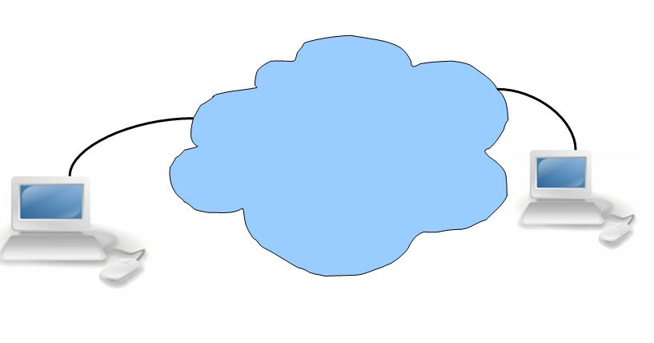

1. Introduction
The Internet is one of the most important technologies in modern life. We use it to attend online classes, send messages, watch videos, read news and communicate with people around the world. However, many people do not know what happens behind the screen when they open a website.
The Internet is a global network of interconnected computer networks. These networks communicate using standard rules called protocols. Millions of devices, including computers, smartphones and servers, exchange information through this system.

2. How Does the Internet Work?
When you type a website address into your browser, several processes happen in a short time. Your device first needs to locate the server that hosts the website.
Step 1: Domain Name System
Computers use IP addresses to identify devices on a network. Remembering numerical addresses for every website would be difficult. The Domain Name System, known as DNS, translates domain names into the corresponding IP addresses so that browsers can find the right destination.
Step 2: Data Travels in Packets
Information is divided into small units called packets. Routers help forward these packets across networks toward their destination. The receiving device processes the data and puts the information together when needed. This process makes it possible to transfer web pages, pictures, videos and messages around the world.
Step 3: The Server Responds
Your browser sends a request to a web server using HTTP or HTTPS. The server responds with the requested resources. HTML describes the structure of a web page, while images and other resources provide additional content. Your browser interprets these resources and displays the website.
3. Important Components
Several components cooperate to make Internet communication possible. Each has a specific role.
| Component | Function |
|---|---|
| ISP | Provides Internet connectivity. |
| Router | Forwards data between networks. |
| DNS | Translates domain names into IP addresses. |
| Web server | Responds to requests for website resources. |
| Browser | Requests and displays web pages. |
4. Using the Internet Safely
The Internet provides education, communication, entertainment and access to information. However, users should protect themselves from online threats. Use strong passwords, avoid suspicious links, keep software updated and never share sensitive information with untrusted websites.
To learn more, explore HTTP documentation, the guide to DNS, and how routers work.
5. Conclusion
The Internet may look simple to users, but it depends on many technologies working together. DNS helps locate servers, routers forward packets, protocols organise communication, and web servers deliver information to browsers. Understanding these processes provides a strong foundation for learning computer networks, cybersecurity and web development. As an IT student, learning how the Internet works helps me understand the technology used in everyday life and prepares me to explore more advanced topics in computing.